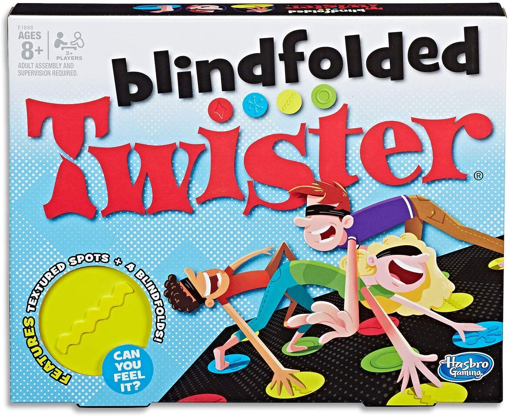
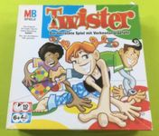
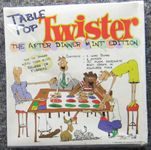

Home
Info
Media
Versions
Suggestions
More
Versions
Twister Napkins ‐ English edition (2020)
Publisher: Hasbro Games, Artist: N/A.

Blinfolded Twister‐ English edition (2020)
Publisher: Hasbro Games, Artist: N/A.

Twister ‐ German edition 2004
Publisher: Hasbro Games, Artist: N/A.

Table Top Twister ‐ English edition (1998)
Publisher: Hasbro Games, Artist: N/A.